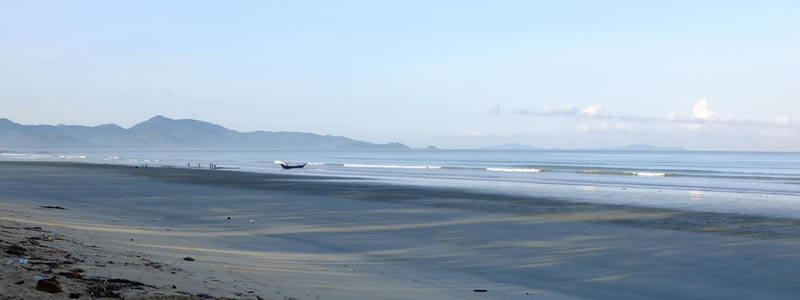

Burma - into the south

We made a last minute decision to visit the mysterious country as it won't be long until it changes. We wanted to see the genuine side of what they now call Myanmar.
Yangon is our gateway and straight away it felt like we had set foot in a world apart. Ten minutes after our flight landed the airport lights were switched off and the immigration officers left, presumably only to come back when the next flight landed?
After years of hardship under a military regime, Burma is starting to open its arms to independent travellers, but there are still many parts of the country where foreigners aren't allowed - either due to conflicts, lack of infrastructure, or just because the government doesn't want the world to see what's happening in those areas.
Yangon is a friendly city, full of street food and bustling streets with goats and chickens mixing up with cars and bikes and where the pavements are people's workshops and kitchens. Everyone is still curious about foreigners and you are watched with childish whispering and dropped jaws until you break the ice with a "Mingalabar" – Burmese for Hello – and get gentle smiles all round.
In Yangon we enquired about heading south and got confirmation that anything south of Mawlamyine was still out of bounds. There were some caves and a boat trip around the area we wanted to do so we headed southwards anyway. After an 8 hour bumpy bus ride we arrived in Mawlamyine, checked into the Breeze Guesthouse and by the evening a rumour that travel into the south was possible was spreading. Information is still hard to obtain but the rumour was confirmed in the morning and we left that evening towards Dawei where no foreigners had set foot for many years.
The night bus journey was agony, the road was in very poor condition and the bus too uncomfortable to sleep, and it played the burmese hits on max. It was pitch dark outside, so we had no idea what the landscapes we were passing looked like. We did notice a few military check point who didn't ask what we were doing there, however we did get lights shined on our faces a few times.
We had no idea where we would be staying, or even if there were any guesthouses. We were told the area had just opened to foreigners, maybe 10 people had been down there but there were no reports of what happened, if they liked it, where they stayed, what they saw.
We arrived in Dawei at sunrise, someone in our party of 'excited-foreigners-heading-towards-the-unknown-south' spoke Thai and luckily so did one of the tuk tuk drivers as no one seemed to know even basic english and our Burmese was terrible. After a few minutes we were heading to a guesthouse in Maungmagan beach.
We were taken to Coconut Guesthouse, who are apparently the only guesthouse licensed to take foreigners. The manager Sandar and the staff were absolute gems and looked after us really well. Sandar speaks amazing English and took us around on bikes one day to see the area.
The beach is gorgeous, not the turquoise sea and white sand gorgeous, but the big wide black sand expanse, with playful warm waves and no one in sight except for a few locals gorgeous. It is apparently a popular place for Burmese holidaying in high season, and it looked so from the amount of (now closed) restaurants along the beach. But it was the people that made the place nicer, their friendliness and warmth still untainted from tourism influence.
We stayed for a couple of days, playing in the waves and watching the stunning sunsets with a cold beer. Not much to do in low season, when normally there are fishing trips organised by Coconut and to a beach pagoda which takes about 30 minutes to walk to along the beach or 2h30m by road.
On one occasion while at the beach we were surrounded by about 200 children who wanted to take our photo, we had seen them rehearsing some sort of choreography in one of the restaurants and didn't really expect them to have noticed us until we saw them running straight to us. They wanted millions of photos of the weird white people that can swim and it turns out they were on a day out with a charity and very excited to see us.
It was time to move on so we did some more asking around and found out that it was possible to go even further south as far as Myeik, a town located right next to an archipelago of 800 virgin Phuket-like islands. We just had to go and have a look. So we hopped on another 10 hour bus ride. This time in daylight and even though the road was mostly inexistent and no one could sleep, the views were amazing. Green, rural, hilly, a million times more beautiful than the landscapes between Yangon and Dawei. Villages of wood huts with palm tree leaves roofs, rice paddies and bamboo plantations abound. As well as military compounds which are normally followed by an NLD office a few hundred metres ahead curiously.
After crossing a river as if the bus was some sort of all terrain vehicle it got on short ferry across a large river and delivered us to Myeik. We quickly found out that all accommodation was outrageously expensive, and we (foreigners)weren't allowed on any boats so we couldn't go to any islands. We had a look around the not so charming city, visited the pagoda on the hill for great views over and booked a flight back to Yangon for the following day. Myeik failed to impress, for its dead-walking dogs and its stinky river front added to the lack of attractions.
Maybe this will change when the government allows foreigners to explore the islands, but for the time being venturing south of Dawei is only really worth for the lovely scenery on the way, if $140 for the flight back to Yangon isn't a waste of cash.
If you fancy heading south check out the practical information we collected here. If you do end up in Dawei and have time, Sandar wants to learn how to swim.
Comments